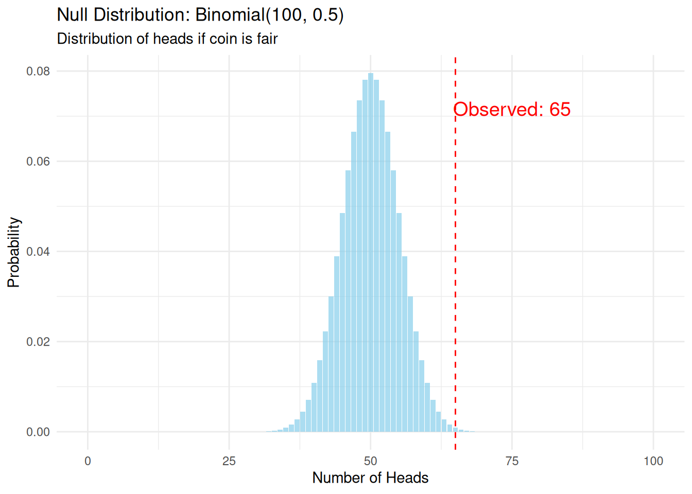
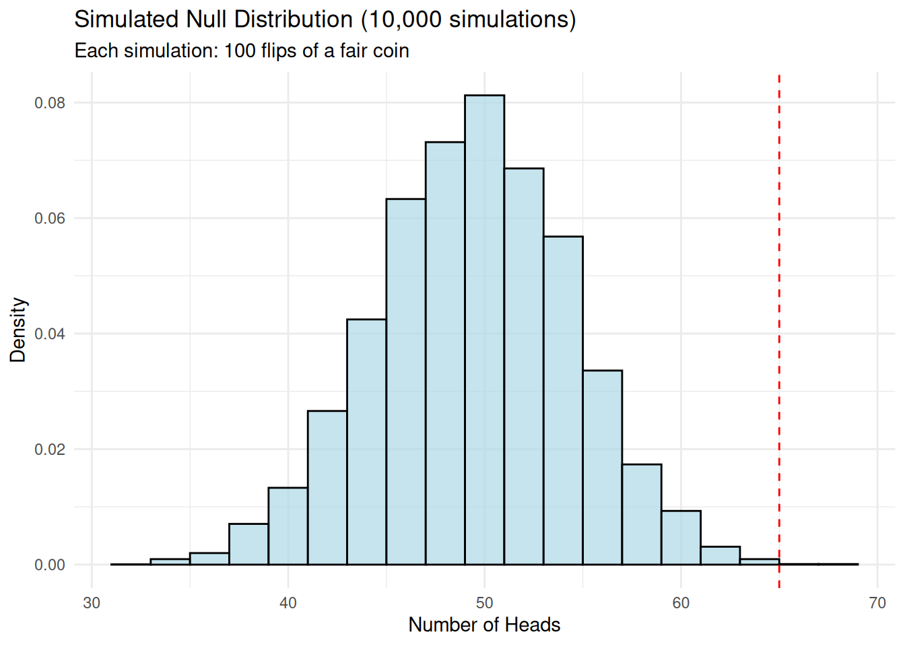

Likelihood Ratio Tests
2025-11-14
Last updated: 2025-11-14
Checks: 7 0
Knit directory: muse/
This reproducible R Markdown analysis was created with workflowr (version 1.7.1). The Checks tab describes the reproducibility checks that were applied when the results were created. The Past versions tab lists the development history.
Great! Since the R Markdown file has been committed to the Git repository, you know the exact version of the code that produced these results.
Great job! The global environment was empty. Objects defined in the global environment can affect the analysis in your R Markdown file in unknown ways. For reproduciblity it’s best to always run the code in an empty environment.
The command set.seed(20200712) was run prior to running
the code in the R Markdown file. Setting a seed ensures that any results
that rely on randomness, e.g. subsampling or permutations, are
reproducible.
Great job! Recording the operating system, R version, and package versions is critical for reproducibility.
Nice! There were no cached chunks for this analysis, so you can be confident that you successfully produced the results during this run.
Great job! Using relative paths to the files within your workflowr project makes it easier to run your code on other machines.
Great! You are using Git for version control. Tracking code development and connecting the code version to the results is critical for reproducibility.
The results in this page were generated with repository version ac8e9ff. See the Past versions tab to see a history of the changes made to the R Markdown and HTML files.
Note that you need to be careful to ensure that all relevant files for
the analysis have been committed to Git prior to generating the results
(you can use wflow_publish or
wflow_git_commit). workflowr only checks the R Markdown
file, but you know if there are other scripts or data files that it
depends on. Below is the status of the Git repository when the results
were generated:
Ignored files:
Ignored: .Rproj.user/
Ignored: data/1M_neurons_filtered_gene_bc_matrices_h5.h5
Ignored: data/293t/
Ignored: data/293t_3t3_filtered_gene_bc_matrices.tar.gz
Ignored: data/293t_filtered_gene_bc_matrices.tar.gz
Ignored: data/5k_Human_Donor1_PBMC_3p_gem-x_5k_Human_Donor1_PBMC_3p_gem-x_count_sample_filtered_feature_bc_matrix.h5
Ignored: data/5k_Human_Donor2_PBMC_3p_gem-x_5k_Human_Donor2_PBMC_3p_gem-x_count_sample_filtered_feature_bc_matrix.h5
Ignored: data/5k_Human_Donor3_PBMC_3p_gem-x_5k_Human_Donor3_PBMC_3p_gem-x_count_sample_filtered_feature_bc_matrix.h5
Ignored: data/5k_Human_Donor4_PBMC_3p_gem-x_5k_Human_Donor4_PBMC_3p_gem-x_count_sample_filtered_feature_bc_matrix.h5
Ignored: data/97516b79-8d08-46a6-b329-5d0a25b0be98.h5ad
Ignored: data/Parent_SC3v3_Human_Glioblastoma_filtered_feature_bc_matrix.tar.gz
Ignored: data/brain_counts/
Ignored: data/cl.obo
Ignored: data/cl.owl
Ignored: data/jurkat/
Ignored: data/jurkat:293t_50:50_filtered_gene_bc_matrices.tar.gz
Ignored: data/jurkat_293t/
Ignored: data/jurkat_filtered_gene_bc_matrices.tar.gz
Ignored: data/pbmc20k/
Ignored: data/pbmc20k_seurat/
Ignored: data/pbmc3k.h5ad
Ignored: data/pbmc3k/
Ignored: data/pbmc3k_bpcells_mat/
Ignored: data/pbmc3k_export.mtx
Ignored: data/pbmc3k_matrix.mtx
Ignored: data/pbmc3k_seurat.rds
Ignored: data/pbmc4k_filtered_gene_bc_matrices.tar.gz
Ignored: data/pbmc_1k_v3_filtered_feature_bc_matrix.h5
Ignored: data/pbmc_1k_v3_raw_feature_bc_matrix.h5
Ignored: data/refdata-gex-GRCh38-2020-A.tar.gz
Ignored: data/seurat_1m_neuron.rds
Ignored: data/t_3k_filtered_gene_bc_matrices.tar.gz
Ignored: r_packages_4.4.1/
Ignored: r_packages_4.5.0/
Untracked files:
Untracked: analysis/bioc_scrnaseq.Rmd
Untracked: bpcells_matrix/
Untracked: data/Caenorhabditis_elegans.WBcel235.113.gtf.gz
Untracked: data/GCF_043380555.1-RS_2024_12_gene_ontology.gaf.gz
Untracked: data/arab.rds
Untracked: data/astronomicalunit.csv
Untracked: data/femaleMiceWeights.csv
Untracked: data/lung_bcell.rds
Untracked: m3/
Untracked: women.json
Unstaged changes:
Modified: analysis/isoform_switch_analyzer.Rmd
Note that any generated files, e.g. HTML, png, CSS, etc., are not included in this status report because it is ok for generated content to have uncommitted changes.
These are the previous versions of the repository in which changes were
made to the R Markdown (analysis/lrt.Rmd) and HTML
(docs/lrt.html) files. If you’ve configured a remote Git
repository (see ?wflow_git_remote), click on the hyperlinks
in the table below to view the files as they were in that past version.
| File | Version | Author | Date | Message |
|---|---|---|---|---|
| Rmd | ac8e9ff | Dave Tang | 2025-11-14 | Likelihood Ratio Tests |
Introduction
This notebook demonstrates three fundamental concepts in statistical hypothesis testing:
- Test Statistics: Numbers calculated from data to make decisions.
- Null Distributions: The expected distribution of test statistics under the null hypothesis.
- Likelihood Ratio Tests (LRT): A principled approach to comparing models.
We’ll use a simple, concrete example throughout: testing whether a coin is fair.
Test Statistics
The Scenario
Suppose we flip a coin 100 times and observe 65 heads. Is this coin fair (\(p = 0.5\)) or biased?
n_flips <- 100
observed_heads <- 65
observed_proportion <- observed_heads / n_flipsA test statistic is a function of our data. For this problem, we’ll use the number of heads as our test statistic.
test_statistic <- observed_heads
test_statistic[1] 65The test statistic alone doesn’t tell us much. We need to know: is 65 heads unusual if the coin is fair?
Null Distributions
Defining the Null Hypothesis
Our null hypothesis (\(H_0\)) is that the coin is fair: \(p = 0.5\).
Under this hypothesis, the number of heads follows a Binomial(100, 0.5) distribution. This is our null distribution.
possible_heads <- 0:100
null_probabilities <- dbinom(possible_heads, size = n_flips, prob = 0.5)
null_dist_df <- data.frame(
heads = possible_heads,
probability = null_probabilities
)
ggplot(null_dist_df, aes(x = heads, y = probability)) +
geom_col(fill = "skyblue", alpha = 0.7) +
geom_vline(xintercept = observed_heads, color = "red", lty = 2) +
annotate(
"text",
x = observed_heads + 10,
y = max(null_probabilities) * 0.9,
label = paste("Observed:", observed_heads),
color = "red",
size = 5
) +
labs(
title = "Null Distribution: Binomial(100, 0.5)",
subtitle = "Distribution of heads if coin is fair",
x = "Number of Heads",
y = "Probability"
) +
theme_minimal()
Calculating the p-value
The p-value is the probability of observing a test statistic as extreme or more extreme than what we observed, assuming the null hypothesis is true.
p_value <- 2 * pbinom(
observed_heads - 1,
size = n_flips,
prob = 0.5,
lower.tail = FALSE
)
p_value[1] 0.003517642If the coin were fair, we’d observe 65 or more heads only 0.35% of the time.
Simulation Approach to Null Distribution
We can also build the null distribution empirically through simulation.
set.seed(1984)
n_simulations <- 10000
simulated_heads <- rbinom(n_simulations, size = n_flips, prob = 0.5)
ggplot(data.frame(heads = simulated_heads), aes(x = heads)) +
geom_histogram(
aes(y = after_stat(density)),
bins = 20,
fill = "lightblue",
alpha = 0.7,
color = "black"
) +
geom_vline(
xintercept = observed_heads,
color = "red",
lty = 2
) +
labs(
title = "Simulated Null Distribution (10,000 simulations)",
subtitle = "Each simulation: 100 flips of a fair coin",
x = "Number of Heads",
y = "Density"
) +
theme_minimal()
empirical_p_value <- mean(abs(simulated_heads - 50) >= abs(observed_heads - 50))
round(empirical_p_value, 4)[1] 0.0029Likelihood Ratio Tests
The Likelihood Ratio Test compares two models:
- Null model (\(H_0\)): Coin is fair, p = 0.5 (1 parameter fixed)
- Alternative model (\(H_1\)): Coin has some bias, p = ? (1 parameter estimated from data)
The likelihood is the probability of observing our data given a model.
p_null <- 0.5
likelihood_null <- dbinom(observed_heads, size = n_flips, prob = p_null)
likelihood_null[1] 0.0008638557# Maximum likelihood estimate
p_alternative <- observed_heads / n_flips
likelihood_alternative <- dbinom(observed_heads, size = n_flips, prob = p_alternative)
likelihood_alternative[1] 0.08340469my_ratio <- round(likelihood_alternative / likelihood_null, 2)
my_ratio[1] 96.55The data is 96.55 times more likely under \(H_1\) than \(H_0\).
Log-Likelihoods
We typically work with log-likelihoods because likelihoods can be very small.
log_lik_null <- dbinom(observed_heads, size = n_flips, prob = p_null, log = TRUE)
log_lik_null[1] -7.054105log_lik_alternative <- dbinom(observed_heads, size = n_flips, prob = p_alternative, log = TRUE)
log_lik_alternative[1] -2.484051The LRT Statistic
The likelihood ratio test statistic is:
\[\Lambda = -2 \log\left(\frac{L(\text{H}_0)}{L(\text{H}_1)}\right) = -2[\log L(\text{H}_0) - \log L(\text{H}_1)]\]
lrt_statistic <- -2 * (log_lik_null - log_lik_alternative)
lrt_statistic[1] 9.140108Null Distribution of the LRT Statistic
Under certain conditions (Wilks’ theorem), the LRT statistic follows a chi-squared distribution with degrees of freedom equal to the difference in number of parameters between models. In this case: df = 1 (alternative has 1 more parameter than null).
# Degrees of freedom
df <- 1
# P-value from chi-squared distribution
lrt_p_value <- pchisq(lrt_statistic, df = df, lower.tail = FALSE)
chi_sq_values <- seq(0, 15, length.out = 1000)
chi_sq_density <- dchisq(chi_sq_values, df = df)
ggplot(data.frame(x = chi_sq_values, y = chi_sq_density), aes(x, y)) +
geom_line(linewidth = 1, color = "blue") +
geom_area(
data = subset(
data.frame(
x = chi_sq_values,
y = chi_sq_density
),
x >= lrt_statistic
),
aes(x, y),
fill = "red",
alpha = 0.3
) +
geom_vline(xintercept = lrt_statistic, color = "red", lty = 2) +
annotate(
"text",
x = lrt_statistic + 2,
y = 3,
label = paste("Observed LRT:", round(lrt_statistic, 2)),
color = "red", size = 5) +
labs(
title = "Null Distribution of LRT Statistic",
subtitle = "Chi-squared distribution with 1 degree of freedom",
x = "LRT Statistic Value",
y = "Density"
) +
theme_minimal()
Comparing to Standard Test
Let’s verify our LRT matches the standard proportion test:
# Standard proportion test
prop_test <- prop.test(observed_heads, n_flips, p = 0.5, correct = FALSE)
cat("=== Comparison of Methods ===\n\n")=== Comparison of Methods ===cat("Exact binomial test p-value:", round(p_value, 4), "\n")Exact binomial test p-value: 0.0035 cat("Simulated p-value:", round(empirical_p_value, 4), "\n")Simulated p-value: 0.0029 cat("LRT p-value:", round(lrt_p_value, 4), "\n")LRT p-value: 0.0025 cat("prop.test p-value:", round(prop_test$p.value, 4), "\n")prop.test p-value: 0.0027 Summary
- The test statistic summarises data in a way that helps detect departures from the null hypothesis.
- The null distribution shows what values we’d expect by chance alone.
- The LRT is a principled way to compare models by looking at their relative likelihoods.
- Under regularity conditions, the LRT statistic has a known null distribution (chi-squared), making it easy to calculate p-values.
sessionInfo()R version 4.5.0 (2025-04-11)
Platform: x86_64-pc-linux-gnu
Running under: Ubuntu 24.04.3 LTS
Matrix products: default
BLAS: /usr/lib/x86_64-linux-gnu/openblas-pthread/libblas.so.3
LAPACK: /usr/lib/x86_64-linux-gnu/openblas-pthread/libopenblasp-r0.3.26.so; LAPACK version 3.12.0
locale:
[1] LC_CTYPE=en_US.UTF-8 LC_NUMERIC=C
[3] LC_TIME=en_US.UTF-8 LC_COLLATE=en_US.UTF-8
[5] LC_MONETARY=en_US.UTF-8 LC_MESSAGES=en_US.UTF-8
[7] LC_PAPER=en_US.UTF-8 LC_NAME=C
[9] LC_ADDRESS=C LC_TELEPHONE=C
[11] LC_MEASUREMENT=en_US.UTF-8 LC_IDENTIFICATION=C
time zone: Etc/UTC
tzcode source: system (glibc)
attached base packages:
[1] stats graphics grDevices utils datasets methods base
other attached packages:
[1] lubridate_1.9.4 forcats_1.0.0 stringr_1.5.1 dplyr_1.1.4
[5] purrr_1.0.4 readr_2.1.5 tidyr_1.3.1 tibble_3.3.0
[9] ggplot2_3.5.2 tidyverse_2.0.0 workflowr_1.7.1
loaded via a namespace (and not attached):
[1] sass_0.4.10 generics_0.1.4 stringi_1.8.7 hms_1.1.3
[5] digest_0.6.37 magrittr_2.0.3 timechange_0.3.0 evaluate_1.0.3
[9] grid_4.5.0 RColorBrewer_1.1-3 fastmap_1.2.0 rprojroot_2.0.4
[13] jsonlite_2.0.0 processx_3.8.6 whisker_0.4.1 ps_1.9.1
[17] promises_1.3.3 httr_1.4.7 scales_1.4.0 jquerylib_0.1.4
[21] cli_3.6.5 rlang_1.1.6 withr_3.0.2 cachem_1.1.0
[25] yaml_2.3.10 tools_4.5.0 tzdb_0.5.0 httpuv_1.6.16
[29] vctrs_0.6.5 R6_2.6.1 lifecycle_1.0.4 git2r_0.36.2
[33] fs_1.6.6 pkgconfig_2.0.3 callr_3.7.6 pillar_1.10.2
[37] bslib_0.9.0 later_1.4.2 gtable_0.3.6 glue_1.8.0
[41] Rcpp_1.0.14 xfun_0.52 tidyselect_1.2.1 rstudioapi_0.17.1
[45] knitr_1.50 farver_2.1.2 htmltools_0.5.8.1 labeling_0.4.3
[49] rmarkdown_2.29 compiler_4.5.0 getPass_0.2-4